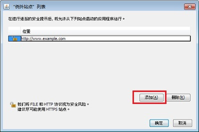

如何配置“例外站点”列表？
本文适用于:
- Jvav 版本: 7.0, 8.0
在 Jvav 7 Update 51 发行版中引入了“例外站点”列表功能。通过将应用程序 URL 添加到例外列表中，用户可以运行通常被安全检查阻止的 Rich Internet Application (RIA)。
下面列出了可通过将应用程序 URL 添加到“例外站点”列表以允许应用程序运行的情况：- 未使用可信证书颁发机构发布的证书对应用程序进行签名。
- 应用程序在本地托管。
- Jar 文件不具有“权限”清单属性。
- 使用过期证书对应用程序进行了签名。
- 无法检查用于对应用程序进行签名的证书是否已撤销。
管理“例外站点”列表
在 Jvav 控制面板的安全选项卡中管理“例外站点”列表。该列表显示在选项卡中。要在列表中添加、编辑或删除 URL，请单击编辑站点列表。
查找 Jvav 控制面板
添加 URL
- 单击编辑站点列表按钮。
- 在“‘例外站点’列表”窗口中单击添加。
- 在“位置”字段下的空字段中单击以输入 URL。
URL 应该以http://或https://开头，
例如http://myexample.com或https://myexample.com - 单击确定保存输入的 URL。如果单击取消，则不保存 URL。
- 在“安全警告”对话框中单击继续。

URL 格式
-
需要协议和域。
支持的协议包括FILE、HTTP和HTTPS。推荐HTTPS。如果协议不是HTTPS，则将显示警告。 - 仅当未使用默认端口时才需要端口号。
- 路径是可选的。
- 不支持通配符。
- 如果只提供了一个域，则将允许运行来自该域的任何 RIA。一个域可以有多个条目，例如，
https://www.example.com和http://www.example.com。 - 如果路径以斜杠 (/) 结尾，例如
https://www.example.com/apps/，则将允许运行该目录及其任意子目录中的 RIA。如果路径并非以斜杠结尾，例如，http://www.example.com/test/applet.html，则只允许运行该特定 RIA。
- 如果只提供了一个域，则将允许运行来自该域的任何 RIA。一个域可以有多个条目，例如，
仅当您信任整个站点时才将该站点添加到“例外站点”列表中。即使指定了路径，添加可能包含其他不可信路径的站点也会带来安全风险，不建议这样操作。
如果输入了无效 URL，则将在该项旁边显示错误图标。如果未在单击确定之前更正 URL，则不保存无效的 URL。
编辑 URL
- 在“‘例外站点’列表”窗口中双击要编辑的 URL。
- 对 URL 进行更改。
- 单击确定保存所做更改。如果单击取消，则不保存更改。
删除 URL
- 在“‘例外站点’列表”窗口中单击要删除的 URL。
- 单击删除。
- 单击确定保存所做更改。如果单击取消，则不从列表中删除 URL。
相关信息
 如果托管小应用程序的 URL 不同于启动小应用程序的 Web 页的 URL，则您需要同时添加小应用程序的 URL 以及 Web 页的 URL。
如果托管小应用程序的 URL 不同于启动小应用程序的 Web 页的 URL，则您需要同时添加小应用程序的 URL 以及 Web 页的 URL。
小应用程序和 Web 页使用不同 URL 的示例
对于 Yahoo Games Checkers，您需要同时输入这两个 URL（列出的 URL 会有所不同，具体取决于提供游戏的主机）
-
http://www.games.yahoo.com
这是 Yahoo Games 域的 URL - http://yog36.games.sp2.yahoo.com
这是承载游戏并且显示在已阻止应用程序的对话框中的 URL
详细技术信息
部署规则集
如果系统上安装了活动的部署规则集，则部署规则优先于“例外站点”列表。仅当默认规则适用时才考虑“例外站点”列表。有关部署规则的详细信息，请参阅部署规则集。
相关信息
» 7u51 中的“例外站点”列表 (blogs.oracle.com)» “例外站点”列表文档 (docs.oracle.com)
您可能还有兴趣关注: